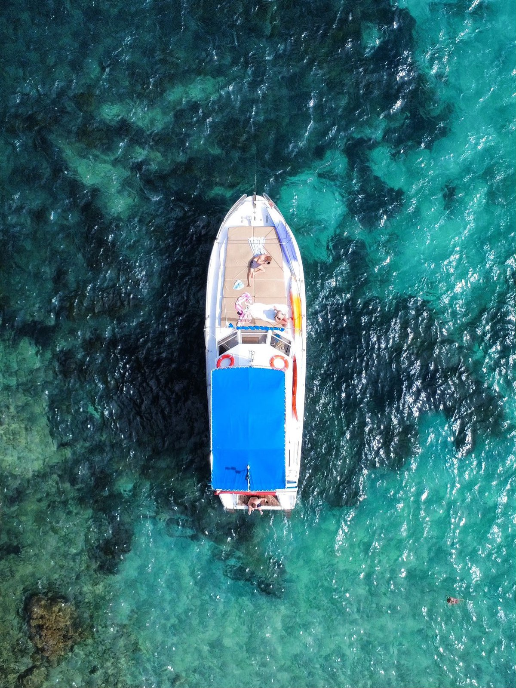

Cuatro horas para descubrir algunos de los paisajes más espectaculares del norte de Mallorca. Navegamos muy cerca de la costa de Formentor, fondeamos en calas de aguas cristalinas y disfrutamos del snorkel, el paddle surf y el kayak, con snacks y comida servidos a bordo.
Recibimos a los clientes y, tras una breve explicación de seguridad, zarpamos rumbo al norte.
Navegamos tranquilamente por la bahía, junto a los veleros fondeados y las playas del pueblo, pasando frente a la histórica Base Militar y la imponente Fortaleza con su emblemático faro y unas vistas privilegiadas sobre la bahía.
Fondeamos entre 30 y 45 minutos en esta pequeña cala de aguas cristalinas: el primer baño del día, snorkel, paddle surf o kayak.
Ponemos rumbo a Formentor navegando muy cerca de los acantilados, a apenas 20-25 metros, para apreciar las formaciones rocosas, el color del agua y las exclusivas villas escondidas entre los pinares.
Fondeamos cerca de una hora en aguas tranquilas y transparentes. Mientras disfrutáis del mar y de las actividades, la tripulación prepara y sirve los snacks y la comida.
Rodeamos la Isla de Formentor y entramos con cuidado en una espectacular cueva marina: estalactitas naturales y llamativas algas rojas, un rincón al que solo se puede acceder desde el mar.
De vuelta hacia el puerto, una última parada frente a la Fortaleza para un baño de unos 15 minutos antes de regresar al Club Náutico.